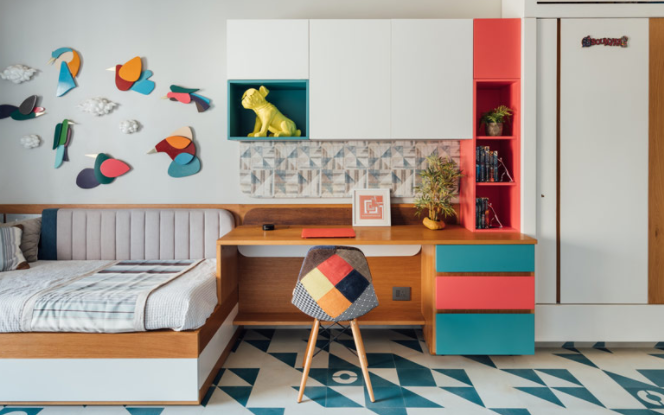

Children Bedroom Furniture - Only the Ring to Get Your Kid's Room Clean
You knock your kid's door to wake him up at the afternoon. He does not rust, so you choose to start out the door and what exactly do you find? A catastrophe area, his clothing, games, and assignments is lying anywhere. Thus, you wake up him and let him clean his room after college. However, he does not do it since he insists he does not have enough room to place anything anywhere. If this is the situation, then it is time to buy some new children bedroom furniture to him.
Children bedroom furniture is ideal for helping your son, or kid, get hisor her or herfamily space arranged. How so? Well, it's as they can be found in a variety of forms and layouts. For example, perhaps your kid has plenty of novels and video games to cooperate with that TV of his own. Then, what is a fantastic match because of his room could be a armoire which may double as an amusement centre. It spacious cupboard area is thought for setting that TV, also, you can get one which includes both shelves and drawers. غرف نوم اطفال كلاسيك 2020 The shelves will be excellent for stowing those away books and games or placing DVD or CD players together with cable boxes whereas the dividers are best for putting anything else which may require putting off.
Along with this armoire, there are a number of different children bedroom furniture choices for your kid's space, which makes it effortless to help your child get organized. A number of the additional choices comprise dressers, nightstands, drawers, desks, mirrors, and bed frames with drawers.

When buying children bedroom furniture, ensure your kid a part of this procedure because change may be a significant factor for a child. When it's done with no input, regardless of how large or small which enter signal is they won't sense part of the procedure and likely is going to wind up not enjoying their new digs. اسعار غرف نوم اطفال A number of the various ways they could get involved is using the design choices of this furniture. Just like, does your kid like easy or items which have a jazzed up appearance? You will find plain choices which feature only a standard wood or white type end or you will find extravagant options like those who are multicolored or many others who have hand painted designs in them.
For a simple method for you and your kid to test out all of the children bedroom furniture options which are offered, all you need to do is plop in the front of the pc with your child and simply begin shopping away online. It's a worry free choice for taking in most of the options and when both of you really do pick on something, it'll be shipped to your property. Now, that's convenient.
In the long run, if you'd like your kid's area to maintain order, buy kids bedroom furniture which makes doing this simple. There are various options available, all which will have that space clean very quickly.